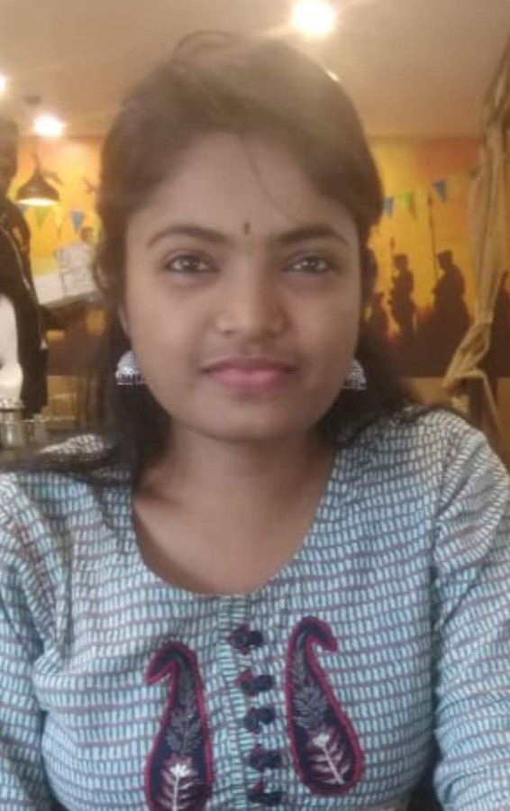
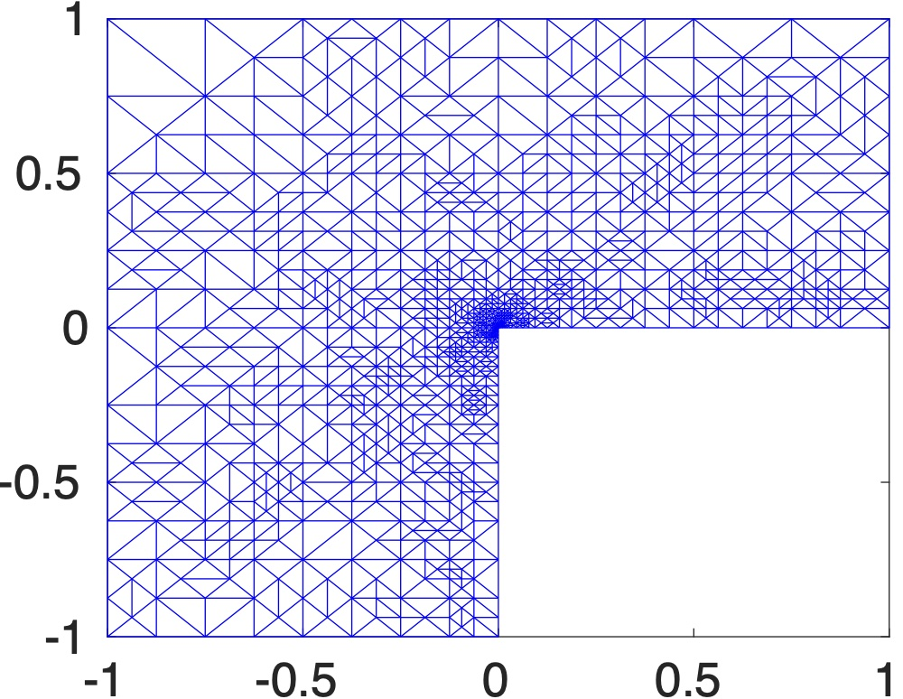
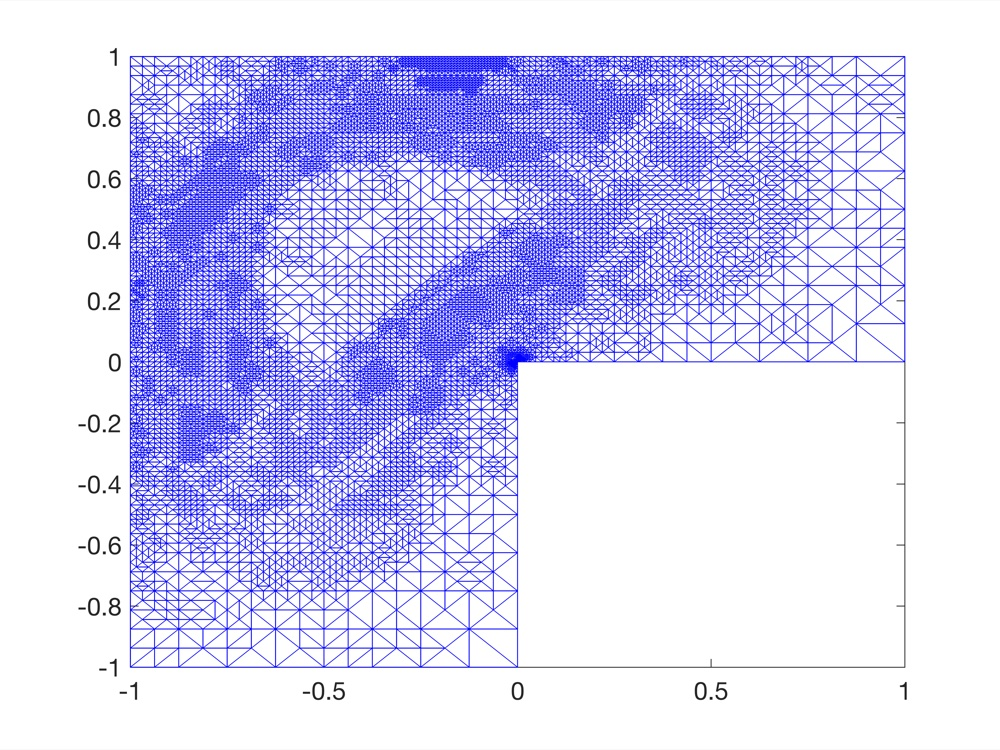
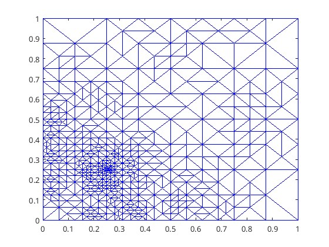
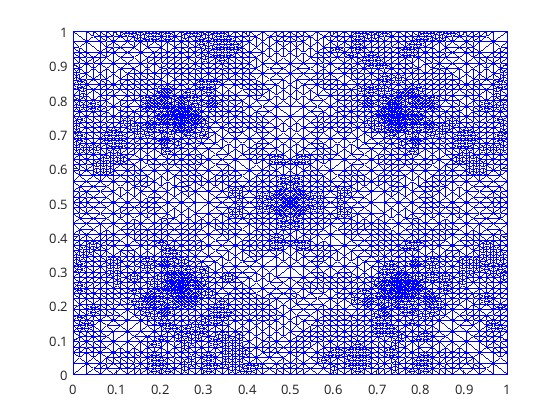

Asha K. Dond
Associate Professor
School of Mathematics, Indian Institute of Science Education and Research (IISER) Thiruvananthapuram
Finite element methods · Adaptive FEM · Stabilized methods · Optimal control problems
01About & Research
I am an Associate Professor in the School of Mathematics at the Indian Institute of Science Education and Research (IISER) Thiruvananthapuram, where I have been on the faculty since 2020. I work in numerical analysis of partial differential equations, designing finite element methods and proving that they are reliable, efficient and, for adaptive schemes, optimal.
I received my Ph.D. from the Indian Institute of Technology Bombay in 2016 under Prof. Neela Nataraj and Prof. Amiya K. Pani; the thesis received the Mathur Award for the best thesis in applied mathematics. I was then a Post-Doctoral Fellow with Prof. Carsten Carstensen at Humboldt-Universität zu Berlin, and an NBHM and National Post-Doctoral Fellow with Prof. Thirupathi Gudi at the Indian Institute of Science, Bangalore. I am a Member of the National Academy of Sciences, India (2025), and my current work is supported by an ANRF Advanced Research Grant.
Research themes
Adaptive finite element methods
A posteriori error estimators and proofs of convergence and quasi-optimal rates for conforming, nonconforming (Crouzeix–Raviart, Morley) and mixed finite elements.
PDE-constrained optimal control
Finite element analysis of distributed control problems governed by the Stokes, biharmonic, m-harmonic and von Kármán equations, including controls with point sources (Dirac measures).
Convection-dominated problems
Local projection stabilized finite element methods for convection–diffusion and Oseen problems, and WENO schemes for hyperbolic conservation laws.
Nematic liquid crystals
Crouzeix–Raviart discretisations of Ginzburg–Landau and Landau–de Gennes models: adaptive schemes, guaranteed lower energy bounds and solution landscapes.
Adaptive mesh refinement in action




Recent
- “Quasi-optimality of AFEM for distributed optimal control problems of Stokes equation: An axiomatic framework” published in Applied Numerical Mathematics.
- “Quasi-optimality of adaptive FEM for optimal control problems involving Dirac measures governed by biharmonic equation” published in Journal of Scientific Computing.
- “Adaptive nonconforming FEM for distributed optimal control problems governed by m-harmonic equations” published in Computers & Mathematics with Applications.
- “Crouzeix–Raviart finite elements for lower energy bounds in Ginzburg–Landau-type minimisation” published in Computers & Mathematics with Applications.
- “Adaptive Crouzeix–Raviart finite elements for a non-convex Ginzburg–Landau model for nematic liquid crystals” published in Computer Methods in Applied Mechanics and Engineering.
02Education & Experience
Positions
-
Associate ProfessorJan 2026 – PresentSchool of Mathematics, IISER Thiruvananthapuram
-
Assistant ProfessorJan 2020 – Jan 2026School of Mathematics, IISER Thiruvananthapuram
-
National Post-Doctoral FellowMar 2019 – Jan 2020Department of Mathematics, Indian Institute of Science, Bangalore
-
NBHM Post-Doctoral FellowAug 2016 – Mar 2019Department of Mathematics, Indian Institute of Science, Bangalore
-
Post-Doctoral FellowApr 2016 – Jul 2016Institut für Mathematik, Humboldt-Universität zu Berlin, Germany
-
Research AssociateDec 2015 – Apr 2016Department of Mathematics, Indian Institute of Technology Bombay
-
Ph.D. InternshipSep 2014 – Jun 2015Interdisciplinary Center for Scientific Computing (IWR), Heidelberg University, Germany
Education
-
Ph.D. in Mathematics2010 – 2016Indian Institute of Technology BombayThesis: Adaptive finite element methods for second-order linear and non-linear elliptic problemsAdvisors: Prof. Neela Nataraj and Prof. Amiya K. Pani
-
M.Sc. in Mathematics2003 – 2005K.T.H.M. College, Nashik, Maharashtra
03Research Projects
-
Advanced Research Grant (ARG)2025 – 2030Anusandhan National Research Foundation (ANRF)Principal Investigator · ₹65,00,000
-
MATRICS Grant2023 – 2026Science and Engineering Research Board (SERB)Principal Investigator · ₹6,60,000
-
DST-DAAD Project2023 – 2024Department of Science & Technology (India) – DAAD (Germany)Co-PI · ₹12,80,000 · with Prof. Carsten Carstensen (HU Berlin) and Prof. Neela Nataraj (IIT Bombay)
-
Royal Society International Exchange Grant2021 – 2023The Royal Society, UKCo-PI · £12,000 · with Prof. Apala Majumdar (University of Strathclyde) and Prof. Utpal Manna (IISER Thiruvananthapuram)
-
Start-up Research Grant (SRG)2020 – 2022Science and Engineering Research Board (SERB)Principal Investigator · ₹14,30,621
04People
Postdoctoral fellows
| Name | Program | Period | Subsequent position |
|---|---|---|---|
| Harish Mallesham NagulaPh.D., IIT Bhubaneswar | Postdoc | Ongoing | — |
| Achyuta Ranjan Dutta MohapatraPh.D., IIT Guwahati | Postdoc | May 2026 – Sep 2026 | National Post-Doctoral Fellow (NPDF), IISc Bangalore |
Ph.D. & Integrated Ph.D. students
| Name | Program | Period | Subsequent position |
|---|---|---|---|
| Subham Nayak | Ph.D. | Aug 2020 – Nov 2025 | Research Associate, IIT Bombay |
| Tooba M. Shaikh | Integrated Ph.D. | Aug 2020 – Ongoing | — |
Current BS-MS students
| Name | Program | Period | Subsequent position |
|---|---|---|---|
| Anusurya Suthar | BS-MS | Jun 2026 – Ongoing | — |
| Aashique M. A. | BS-MS | Jun 2026 – Ongoing | — |
| Manit Kishor | BS-MS | Jun 2026 – Ongoing | — |
Former BS-MS & M.Sc. students
| Name | Program | Period | Subsequent position |
|---|---|---|---|
| Bindhia R. | BS-MS | Jun 2025 – 2026 | M.S. in Financial Risk Management, Trinity College Dublin, Ireland |
| Shreya Jugoolkar | BS-MS | Jun 2025 – 2026 | Ph.D. student, Simon Fraser University, Canada |
| Arya E. K. | M.Sc. | Dec 2024 – 2025 | Ph.D., IISER Thiruvananthapuram |
| Asiya AnasCo-supervised with Prof. Thirupathi Gudi (IISc) | BS-MS | Aug 2024 – 2025 | Ph.D., University of Kansas, Lawrence, USA |
| Nannapaneni Veena Sri | BS-MS | Aug 2024 – 2025 | Associate Solution Adviser, Deloitte, India |
| Preveena K. V. | BS-MS | Aug 2023 – 2024 | Ph.D., IIIT Kottayam |
| Kaushik Babu Nambiar | BS-MS | Aug 2023 – 2024 | — |
| Aadhya Krishnakumar | BS-MS (Minor) | Jul 2019 – 2024 | M.A. Economics, New York University, USA |
| Devika Santhosh | M.Sc. | Jul 2021 – 2023 | Researcher, Data Operations, Synaptic, India |
| Adarsh Krishnan R.Co-supervised with Dr. Sheetal Dharmatti | BS-MS | Jul 2018 – 2023 | JRF, IIT Bombay |
| Priyanka Mohapatra | BS-MS | Jul 2018 – 2023 | Ph.D., IIT Bombay |
| Amjad Hasan P. | BS-MS | Jul 2017 – 2023 | Ph.D., IOW, Germany |
| Selja S. | BS-MS | Jul 2017 – 2022 | — |
| Akshai Krishnan T. | BS-MS | Jul 2016 – 2021 | Integrated Ph.D. (Physics), IISc Bangalore |
| Kavya K. H. | BS-MS | Jul 2016 – 2021 | Data Analytics, University of Glasgow, UK |
05Publications
Journal articles
-
Quasi-optimality of AFEM for distributed optimal control problems of Stokes equation: An axiomatic framework.Applied Numerical Mathematics, 230, 87–113, 2026. Journal
-
Quasi-optimality of adaptive FEM for optimal control problems involving Dirac measures governed by biharmonic equation.Journal of Scientific Computing, 109(2), 2026. Journal
-
Adaptive nonconforming FEM for distributed optimal control problems governed by m-harmonic equations.Computers & Mathematics with Applications, 218, 133–157, 2026. Journal
-
Crouzeix–Raviart finite elements for lower energy bounds in Ginzburg–Landau-type minimisation.Computers & Mathematics with Applications, 214, 27–50, 2026. Journal
-
Adaptive Crouzeix–Raviart finite elements for a non-convex Ginzburg–Landau model for nematic liquid crystals.Computer Methods in Applied Mechanics and Engineering, 452, Part A, 2026. Journal
-
Hybrid CBSQI-WENO schemes for convection diffusion problems.International Journal for Numerical Methods in Fluids, 97(6), 914–939, 2025. Journal
-
Convergence of adaptive Crouzeix–Raviart and Morley FEM for distributed optimal control problems.Computational Methods in Applied Mathematics, 24(3), 599–622, 2024. Journal
-
Stochastic effects on solution landscapes for nematic liquid crystals.Liquid Crystals, 1–21, 2024. Journal
-
WENO smoothness indicator based troubled-cell indicator for hyperbolic conservation laws.International Journal for Numerical Methods in Fluids, 96(1), 44–86, 2024. Journal
-
A posteriori error analysis for a distributed optimal control problem governed by the von Kármán equations.ESAIM: Mathematical Modelling and Numerical Analysis, 56(5), 1655–1686, 2022. Journal
-
Finite difference modified WENO schemes for hyperbolic conservation laws with non-convex flux.International Journal for Numerical Methods in Fluids, 93, 3005–3019, 2021. Journal
-
Quasi-optimality of adaptive mixed FEMs for general second-order linear elliptic problems.Computational Methods in Applied Mathematics, 19(2), 233–250, 2019. Journal
-
Edge patch-wise local projection stabilized nonconforming FEM for the Oseen problem.Computational Methods in Applied Mathematics, 19(2), 189–214, 2019. Journal
-
Patch-wise local projection stabilized finite element methods for convection–diffusion problems.Numerical Methods for Partial Differential Equations, 35(2), 638–663, 2019. Journal
-
An error analysis of discontinuous finite element methods for the optimal control problems governed by Stokes equation.Numerical Functional Analysis and Optimization, 40(4), 421–460, 2019. Journal
-
Three first-order finite volume element methods for the Stokes equations.SIAM Journal on Numerical Analysis, 56(4), 2648–2671, 2018. Journal
-
A priori and a posteriori estimates of conforming and mixed FEM for a Kirchhoff equation of elliptic type.Computational Methods in Applied Mathematics, 17(2), 217–236, 2017. Journal
-
Convergence of an adaptive lowest-order Raviart–Thomas element method for general second order linear elliptic problems.IMA Journal of Numerical Analysis, 37(2), 832–860, 2017. Journal
-
On a nonconforming finite element approximation for optimal control of an obstacle problem.Computational Methods in Applied Mathematics, 16(4), 653–666, 2016. Journal
-
Error analysis of nonconforming and mixed FEMs for second-order linear non-selfadjoint and indefinite elliptic problems.Numerische Mathematik, 133(3), 557–597, 2016. Journal
Conference proceedings
-
A posteriori error analysis for patch-wise local projection stabilized FEM for convection–diffusion problem.XVII International Conference on Hyperbolic Problems: Theory, Numerics, Applications (HYP 2018).
06Invited Talks & Conferences
-
“Convergence of adaptive mixed FEMs for linear elliptic problems based on separate marking”Jul 20199th International Congress on Industrial and Applied Mathematics (ICIAM 2019), Valencia, Spain
-
“Stabilized finite element methods for convection–diffusion problems”Mar 2019In-house Symposium, Department of Mathematics, IISc Bangalore
-
“Unified error analysis of finite element methods for the optimal control problems governed by Stokes equation”Mar 2019Second National Conference on Control and Inverse Problems, Central University of Tamil Nadu, Thiruvarur
-
“Patch-wise local projection nonconforming FEM for convection–diffusion problem”Jun 2018XVII International Conference on Hyperbolic Problems (HYP 2018), University Park, Pennsylvania, USA
-
“Edge patch-wise local projection nonconforming FEM for convection–diffusion problem”Jul 2017IWM Annual Conference 2017, Indian Institute of Science, Bangalore
-
“Patchwise local projection stabilization for convection–diffusion problem”Jun 2017Recent Advances in PDE: Theory, Computations and Application, IIT Bombay
-
“Quasi-optimality of adaptive mixed finite element methods”Mar 2017Department of Mathematics, IISc Bangalore
-
“Expanded mixed finite element methods for a nonlocal problem of elliptic type”Dec 2016International Conference on Recent Advances on Theoretical and Computational PDEs with Applications, Panjab University, Chandigarh
-
“Error analysis of mixed FEMs for general second order linear elliptic problems”May 201614th European Finite Element Fair, Bonn, Germany
-
“Mixed finite element method for a class of general second order linear elliptic problems”Dec 2015International Conference on Current Trends in PDEs: Theory and Computation, South Asian University, New Delhi
-
“Error analysis of mixed finite element methods for the general second-order linear elliptic problem”Aug 2015Department Symposium, IIT Bombay
-
“Convergence of adaptive mixed finite element methods for second order elliptic problems”Aug 2015International Congress on Industrial and Applied Mathematics (ICIAM 2015), Beijing, China
-
“Convergence of an adaptive mixed finite element method for general second order linear elliptic problems”Nov 2014Institut für Mathematik, Humboldt-Universität zu Berlin, Germany
-
“Error analysis of nonconforming and mixed FEMs for second-order linear non-selfadjoint and indefinite elliptic problems”Oct 2014IWR, Heidelberg University, Germany
07Teaching
Courses at IISER Thiruvananthapuram
| Course | Code | Semester | Students |
|---|---|---|---|
| Theory of Ordinary Differential Equations | MAT 324 | Vasant 2025 | 48 · Major |
| Finite Element Methods | I2M423 / MAT4205 / MAT6205 | Vasant 2025 | 11 · Major |
| Numerical Analysis | MAT 314 | Varsha 2024 | 38 · Major |
| Finite Element MethodsLetter of appreciation from the Director | I2M423 / MAT4205 / MAT6205 | Vasant 2024 | 21 · Major |
| Numerical AnalysisLetter of appreciation from the Director | MAT 314 | Varsha 2023 | 39 · Major |
| Scientific Computing | DSC322 / I2M321 / MAT3021 | Vasant 2023 | 77 · Major |
| Numerical Solutions of Differential Equations | I2M4102 / MAT511B / MAT6105 | Varsha 2022 | 18 · Elective |
| Introduction to Linear AlgebraLetter of appreciation from the Director | MAT 121 | Vasant 2022 | 231 · Foundation |
| Linear Algebra | MAT/MSM 313 | Varsha 2021 | 79 · Major |
| Theory of Ordinary Differential Equations | MAT 324 | Vasant 2021 | 28 · Major |
| Numerical Analysis | MAT 314 | Varsha 2020 | 28 · Major |
Workshops & earlier teaching
MATLAB lab (Teaching Assistant)
Degree College Teachers Training Programme in Mathematics, IISc Challakere Campus, Chitradurga.
MATLAB lab sessions
An Introduction to MATLAB and Numerical Computations, Department of Mathematics, Central University of Kerala.
MATLAB lab sessions
IST PDE: Theory and Computation, IISc Bangalore.
MATLAB lab sessions
Advanced Level Training Program on Differential Equations, IISER Thiruvananthapuram.
Teaching Assistant
Undergraduate courses, Indian Institute of Technology Bombay.
08Contact
Email & Phone
ashadond@iisertvm.ac.in
+91 471 277 8247
Address
School of Mathematics
Indian Institute of Science Education and Research
Maruthamala P.O., Vithura
Thiruvananthapuram – 695551, Kerala, India